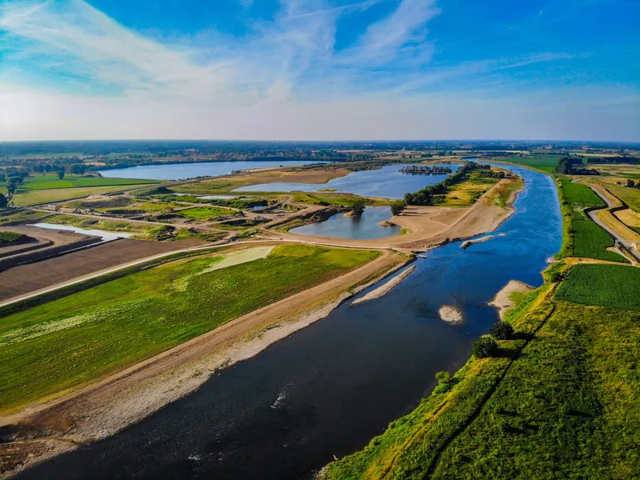

The Hotspottool helps specialists trace possible sources of pollution
Users can now register: the Hotspottool for potential industrial discharges is available to partners of the Schone Maaswaterketen.
Source: schonemaaswaterketen.nl
In practice
Provinces, water authorities and environmental agencies, involved as users, data suppliers or partners in the water chain.
6provinces
15water authorities
13environmental agencies
Case · Schone Maaswaterketen
AquaWare develops the Hotspottool that SMWK partners use to select and prioritise potential industrial sources. Available since March 2026.
First things first: the companies and substances where further investigation matters most.


Users can now register: the Hotspottool for potential industrial discharges is available to partners of the Schone Maaswaterketen.
Source: schonemaaswaterketen.nlThe tool aims to provide a quick, visual first overview of companies that may be discharging harmful substances – the so-called ‘hotspots’. It does this by linking data sources on, for example, SBI codes, sector information and possible substance discharges (SVHC and WFD).
With the tool’s dashboard, water authorities, Rijkswaterstaat, provinces, drinking water companies, municipalities and environmental agencies can map possible dischargers of harmful substances in the Meuse river basin. Users can filter in several ways, for example by WWTP area, competent authority, municipality or postcode, but also by substance group or other characteristics.
The tool is meant as a first step in tracing potential dischargers. Based on this selection of companies that may be discharging substances of very high concern (SVHC) and WFD substances, inspectors, enforcement officers, permit officers, policy makers and drinking water companies can decide more precisely where extra attention or investigation is needed.
At the moment the tool is only available internally, to partners of the Schone Maaswaterketen. Partners can register to use it by sending an email to info@schonemaaswaterketen.nl stating their name, business email address, organisation and a short motivation.
More collaborations
Case studies will follow, in consultation with the partners.
Water authority, environmental agency and province work from the same shortlist.
Every choice can be traced to its source, substance and measurement.
EU hosting, roles per area, exportable data.
Get in touch
In a first conversation we look at how you work now, the data available and your main challenge. Then we decide whether and how AquaWare can help.